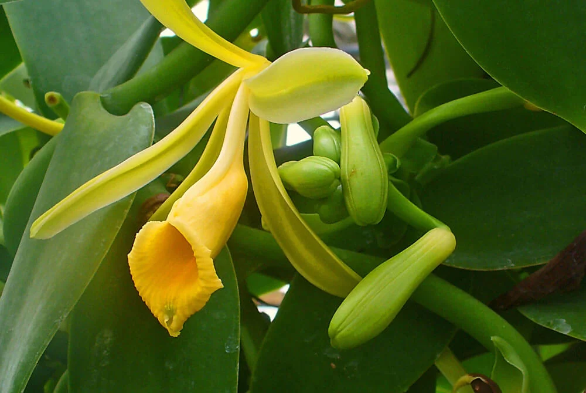

Planta de Vainilla

La vainilla es una planta perenne de tallo grueso
La vainilla es una especia derivada de las orquídeas
Las hojas cortas, oblongas, de color verde oscuro de vainilla son gruesas y coriáceas
ir al menu principal